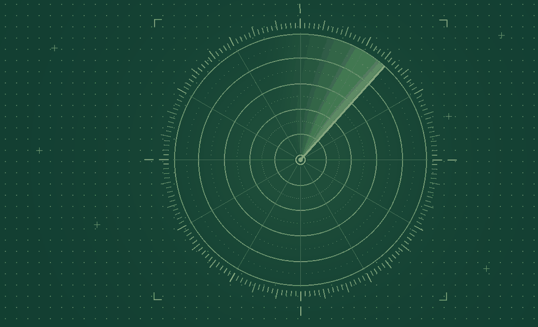

Обзор сети

Белый список
сейчас включён?
Сравним доступ к сайтам из списка и за его пределами.
Почему такой вывод
- Сайты из белого списка
- Обычные российские
- Обычные зарубежные
Нет замера
Проверка покажет задержки и пропущенные ответы.
Есть ли глушилка?
По веб-проверке это установить невозможно. Радиопомехи, перегрузка сети и слабое покрытие могут выглядеть одинаково. Здесь видны только последствия для загрузки сайтов.
Сервисы
История
Последние 30 проверок хранятся в этом браузере.
О методе
Что показывает «Просвет»
При ограничениях мобильного интернета оператор может сохранить доступ к части российских сервисов. «Просвет» сравнивает доступность двух групп сайтов по вашему текущему соединению.
Как проходит проверка
Телефон дважды загружает по одному небольшому изображению с девяти сайтов. При неоднозначных ответах или подозрении на белый список проводится третий замер. У каждого запроса новый адрес, обычно на ответ даётся восемь секунд, при третьем замере — двенадцать. Для медленной сети можно выбрать 20 секунд.
В белой группе — Банк России, Почта России и РИА Новости. Для сравнения выбраны три российских проекта (HTML Academy, Linux.org.ru, OpenNET) и три зарубежных (W3C, Python.org, GNU). Они не названы в использованных публикациях Минцифры и МТС. Полный состав разрешённых адресов конкретного оператора приложению неизвестен.
Когда вероятен белый список
Вы подтвердили мобильную сеть без Wi-Fi и VPN. Как минимум два одних и тех же сайта из перечня ответили во всех трёх замерах, а ни один из шести обычных сайтов ни разу не ответил. Если тип сети неизвестен, при такой картине показываем «Доступны только сайты из списка».
Когда два контрольных сайта стабильно отвечают, доступ выходит за пределы проверенной группы. Разрозненные ответы дают неопределённый результат. При отсутствии всех ответов определить режим нельзя.
Как читать качество связи
Время ответа — медиана длительности успешных загрузок, включая установление соединения. «Без ответа» включает ошибки и тайм-ауты. При медиане от двух секунд отмечаем задержки. Если один и тот же сайт ответил только в части замеров, отмечаем нестабильность. Это ориентиры для этой проверки, а не измерение скорости в Мбит/с или радиосигнала.
Что может повлиять на вывод
Загрузка изображения подтверждает доступ к одному адресу. Сбой сайта, слабая связь, DNS-фильтр, блокировщик контента или iCloud Private Relay могут изменить результат. При сомнении повторите проверку чуть позже.
Safari не сообщает режим оператора, номер базовой станции или уровень радиосигнала в дБм. GPS и датчики движения не показывают, какие сайты разрешил оператор. Приложение оценивает соединение в момент проверки.
Как использовать без доступа к сайту
Заранее откройте приложение в Safari и добавьте его через «Поделиться» → «На экран “Домой”». Один раз запустите его с иконки при рабочем интернете и дождитесь готовности ниже. Тогда сохранённый экран сможет открыться при ограничениях.
Проверяем готовность к работе офлайн…
Какие данные используются
При запуске проверки телефон обращается напрямую к девяти сайтам. Они получают обычный сетевой запрос и видят исходящий IP-адрес соединения. История хранится на устройстве. Геолокация, микрофон и камера приложению не нужны.